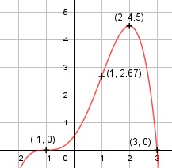

Aufgabe 52 f(x) = (1/6)(1 + x)3(3 - x) f(x) = (1/6)(1 + 3x + 3x2 + x3)(3 - x) f(x) = (1/6)(3+9x+9x2+3x3-x-3x2-3x3-x4) f(x) = (1/6)(-x4 + 6x2 + 8x + 3) f(x) = -(1/6)x4 + x2 + (4/3)x + 0,5 f'(x) = -(2/3)x3 + 2x + (4/3), f''(x) = - 2x2 + 2, f'''(x) = -4x Definitionsbereich: -∞ < x < ∞ Wertebereich: -∞ < f(x) ≤ 4,5 (siehe Extrempunkte) Asymptoten: - Symmetrie: - Nullstellen: -(1/6)x4 + x2 + (4/3)x + 0,5 = 0 |*(-6) x4 - 6x2 - 8x - 3 = 0 Durch Probieren gefunden x1 = -1 Hornerschema: 1 0 -6 -8 -3 x1 = -1 -1 1 5 3 ----------------------------------- 1 -1 -5 -3 0 Polynomdivision: x4 - 6x2 - 8x - 3 : (x + 1) = x3 - x2 - 5x - 3 -(x4 + x3) ------------ -x3 - 6x2 - 8x - 3 -(-x3 - x2) -------------- -5x2 - 8x - 3 -(-5x2 - 5x) ------------- -3x - 3 -(-3x - 3) ------------ 0 Durch Probieren gefunden x2 = 3 1 -1 -5 -3 x2 = 3 3 6 3 -------------------------- 1 2 1 0 Polynomdivision: x3 - x2 - 5x - 3 : (x - 3) = x2 + 2x + 1 -(x3 - 3x2) ------------ 2x2 - 5x - 3 -(2x2 - 6x) ------------ x - 3 -(x - 3) --------- 0 x2 + 2x + 1 = 0 p, q - Formel: p = 2, q = 1 x3,4 = x3,4 = -1 ± x3,4 = -1 ± x1,3,4 = -1 (dreifache Nullstelle, Berührpunkt) N1,3,4(-1|0), N2(3|0) Schnittpunkt mit der y-Achse: f(0) = -(1/6) * 04 + 02 + (4/3) * 0 + 0,5 = 0,5 Sy(0|0,5) Extrempunkte: -(2/3)x3 + 2x + (4/3) = 0 |*(-3) 2x3 - 6x - 4 = 0 Durch Probieren gefunden x1 = -1 Hornerschema: 2 0 -6 -4 x1 = -1 -2 2 4 --------------------------- 2 -2 -4 0 Polynomdivision: 2x3 - 6x - 4 : (x + 1) = 2x2 - 2x - 4 -(2x3 + 2x2) ------------ -2x2 - 6x - 4 -(-2x2 - 2x) -------------- -4x - 4 -(-4x - 4) ----------- 0 2x2 - 2x - 4 = 0 |:2 x2 - x - 2 = 0 p, q - Formel: p = -1, q = -2 x2,3 = x2,3 = 0,5 ± x2,3 = 0,5 ± x2,3 = 0,5 ± 1,5 x2 = 2, f(2) = -(1/6) * 24 + 22 + (4/3) * 2 + 0,5 = 4,5 x3 = -1, f(-1) = 0 f''(-1) = -2 * (-1)2 + 2 = 0 f''(2) = -2 * 2 + 2 < 0 --> Hochpunkt (2|4,5) Wendepunkt: -2x2 + 2 = 0 -2 -2x2 = - 2 |:(-2) x2 = 1 |ⱱ x1,2 = ± 1 x1 = 1, f(1) = -(1/6) * 14 + 12 + (4/3) * 1 + 0,5 = 2,67 x2 = -1, f(-1) = 0 f'''(1) = -4 * 1 ≠ 0 --> Wendepunkt (1|2,67) f'''(-1) = -4 * (-1) ≠ 0, f'(-1) = 0, f''(-1) = 0 --> Sattelpunkt (-1|0) Graph:
